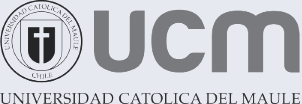
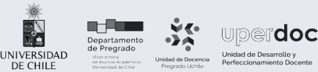
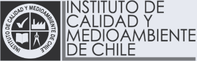
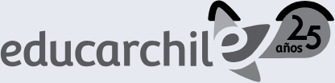
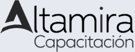

Cursos en línea, videos con IA y productos interactivos.
Soluciones tecnopedagógicas para universidades, organismos de capacitación y empresas.
 Cristopher Gutiérrez GonzálezProfesor de Castellano y Comunicación, diseñador instruccional y asesor educativo. Magíster en Ciencias de la Educación, mención Currículum y Evaluación.
Cristopher Gutiérrez GonzálezProfesor de Castellano y Comunicación, diseñador instruccional y asesor educativo. Magíster en Ciencias de la Educación, mención Currículum y Evaluación.
Etapas de mi producción
- 20+
cursos en línea diseñados para universidades y organismos de capacitación
- 3
diplomados de 120 horas diseñados para docentes universitarios
- 6
años diseñando formación en educación superior
He trabajado con





En la Universidad Católica del Maule: Facultad de Medicina, Dirección de Formación General, Dirección General de Docencia, Centro de Desarrollo e Innovación Docente y Vicerrectoría de Investigación y Postgrado.
Recomendaciones
“Ha traducido los programas definidos por las y los académicos en experiencias de aprendizaje virtuales coherentes, con una estructura común que ordena la ruta formativa de cada curso.”
“Destaco su sólida formación en diseño instruccional y curricular, su capacidad para integrar tecnologías emergentes con sentido pedagógico, su compromiso con la mejora de la docencia universitaria y su disposición al trabajo colaborativo.”
“Su colaboración fue valorada positivamente por la carrera, razón por la cual fue convocado nuevamente en años sucesivos.”
Su trabajo también está certificado por la Dirección de Formación General, la Dirección General de Docencia y el Magíster en Educación de la Universidad Católica del Maule.